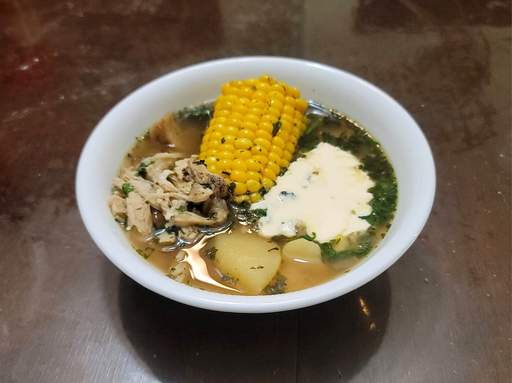

Ajiaco

Ingredients:
Marinade:
- ~2 lb Chicken breasts, bone-in, skin-on
- 1 Yellow onion, coarsely chopped
- 5 cloves Garlic, coarsely chopped
- 1 tbsp Kosher salt
- 1 tbsp Black pepper
Ajiaco:
- 2 tbsp Olive oil
- 8 cups Chicken stock
- 1 1/2 lb Mixed potatoes, peeled, cut into large chunks
- 2-3 ears Corn, cut into 3-4 pieces each
- 1 bunch Cilantro, tied together with butcher's twine
- 1 bunch Scallions, tied together with butcher's twine
Toppings:
- Colombian Crema fresca
- Avocados, sliced
- Capers
- Cilantro, chopped
Instructions:
- Combine the marinade ingredients and let marinate overnight.
- Heat the olive oil in a large pot over medium-high heat. Add the chicken along with the marinade and let brown for about 6 minutes per side.
- Pour in the stock and bring to a boil. Then reduce to medium-low and cover and simmer. Cook for about 30 minutes or until the chicken is tender.
- Remove the chicken from the pot and let cool. Once cool enough to handle, shred and reserve for later.
- Place the potatoes into the pot and let cook over medium heat for about 5 minutes. Then add in the corn, cilantro, scallions, and the guascas. Cover and let simmer for about 20 minutes, or until the potatoes are fork tender.
- Remove the cilantro and scallions from the pot and add back in the chicken. Continue to simmer just until the chicken is warmed through.
- Remove from the heat and serve immediately with any desired toppings.